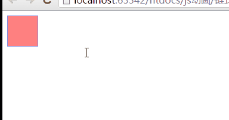

链式运动
实现思路：
先进行某个运动，该运动完成后，再进行下一步运动，就达到了链式运动的效果
效果

链式运动
在链式运动编写中简单的异步用一个callback函数做参数,当前面运动执行完后我们将调用下一步要执行的运动的函数
在右方回调（callback）函数中，使用this，它指向的是Window
运用到了第一小节写的getStyle函数，注意不同之处,由于我们我们之前的getStyle函数获取width返回的是带单位的字符串
对取得的width值转换为浮点数
真实示例